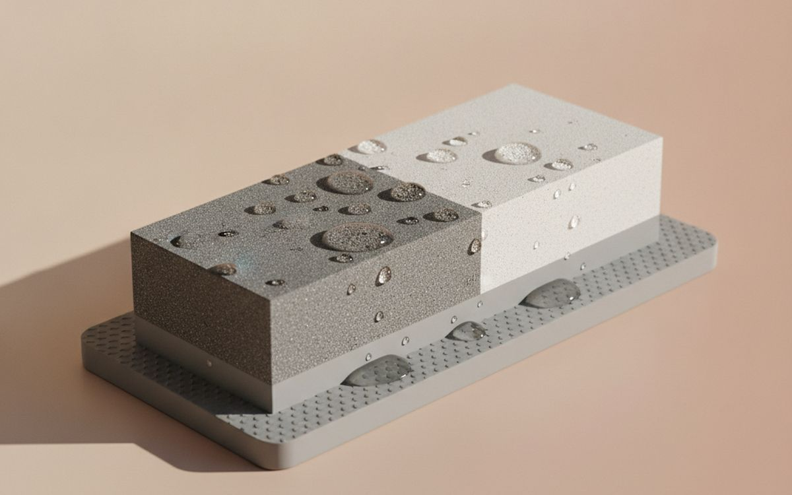
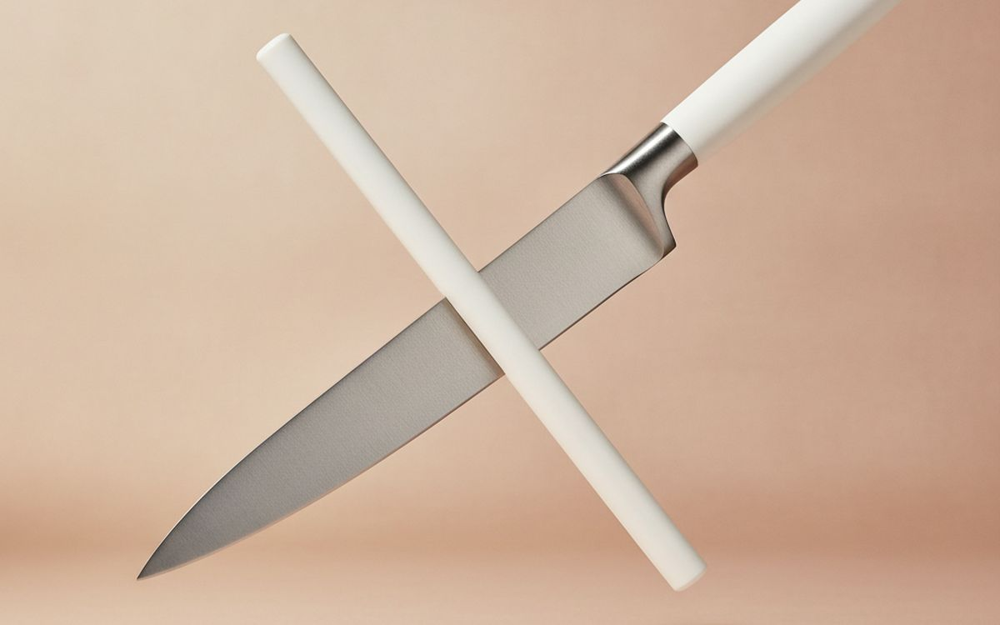
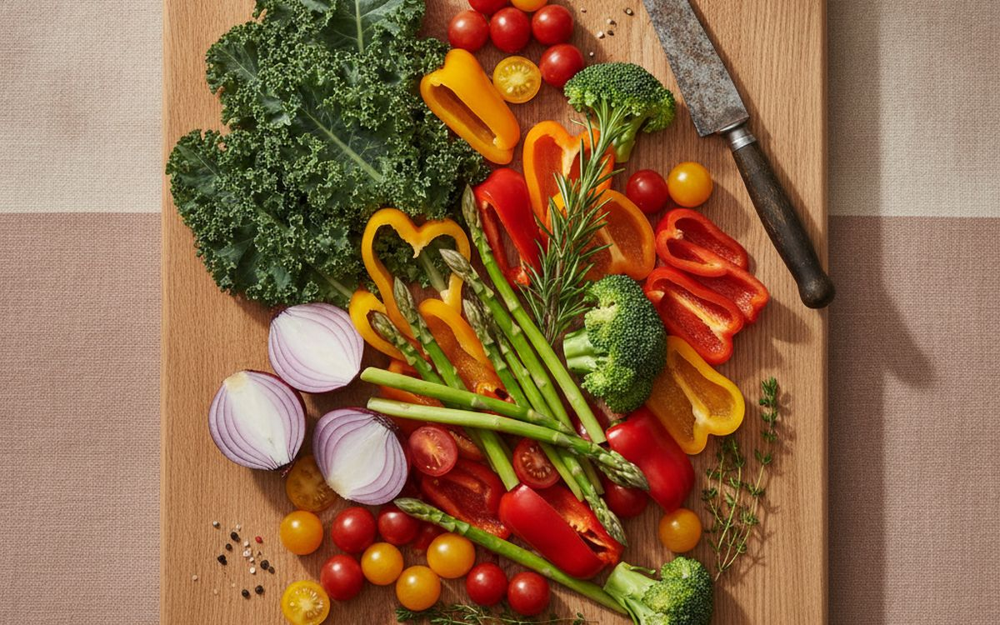
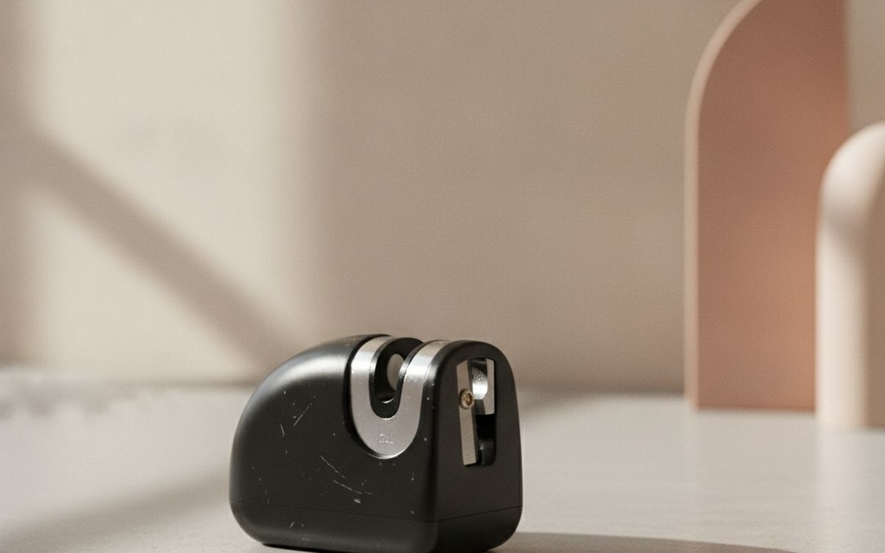
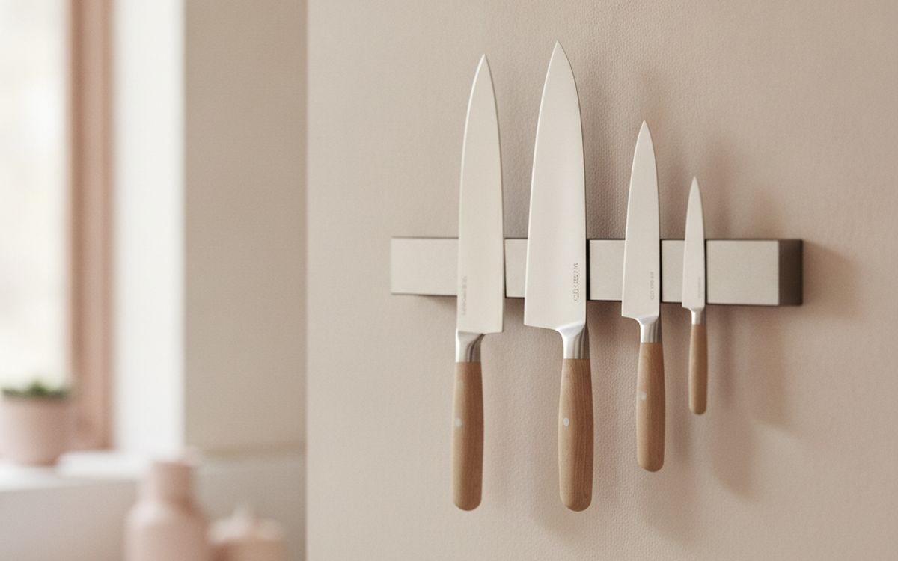
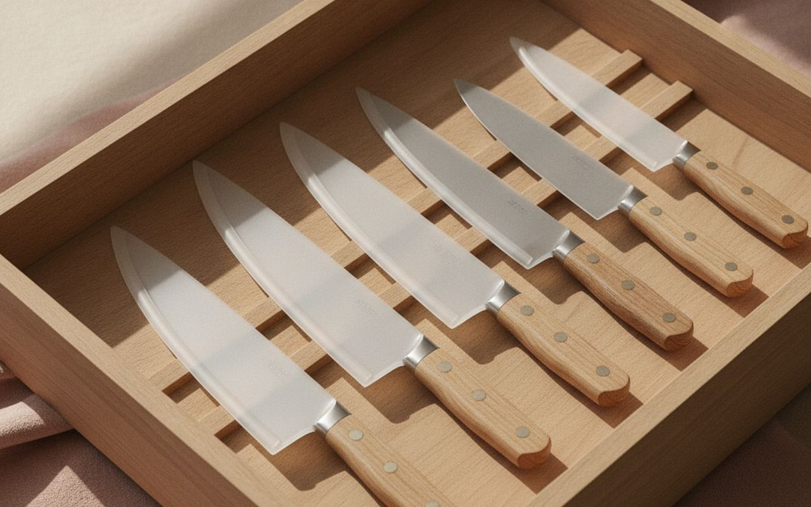
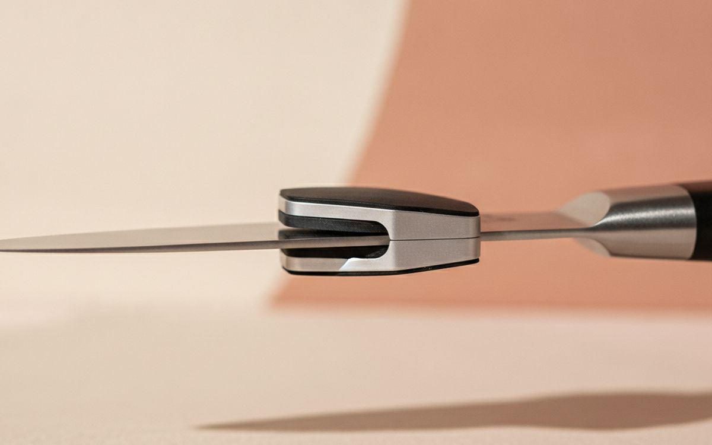
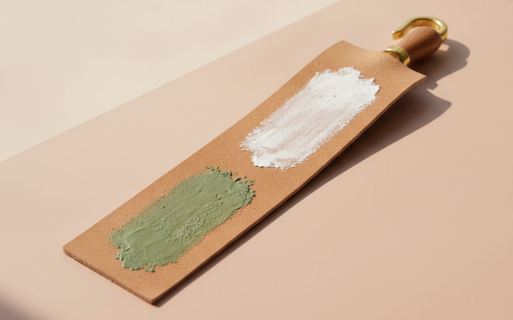
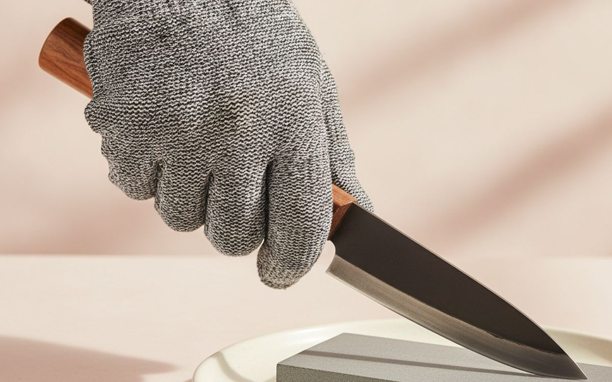
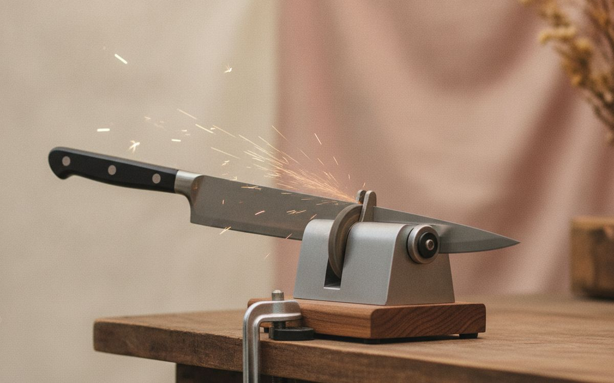

A dull knife is more dangerous than a sharp one. It slips off a tomato skin instead of cutting it, and it takes more force, which is how fingers get hurt. Most home knives are dull not because they are cheap but because nobody sharpens them, and they live on glass boards and in a drawer jumbled with other metal.
This list is ordered by what makes the biggest difference to the edge. Some of it is sharpening. A lot of it is simply not damaging the edge in the first place, which is cheaper and easier.
Prices below are approximate street prices at the time of writing and move around constantly, especially during sale events. Treat them as a rough band for budgeting, not a quote. Always check the live listing before you buy.
Με λίγα λόγια
A two-sided whetstone (1000/6000 grit)
The sharpener that does it properly
Γνωστοποίηση. Οι σύνδεσμοι σε αυτή τη σελίδα είναι συνδεδεμένοι. Αν αγοράσετε μέσω κάποιου, ενδέχεται να λάβουμε προμήθεια χωρίς επιπλέον κόστος για εσάς. Δεν επηρεάζει το τι μπαίνει στη λίστα ούτε τη σειρά της.
Πώς επιλέξαμε
These picks come from professional chefs' and knife makers' advice, published sharpener testing and long-run owner reports, cross-checked against current retail listings. We have not personally tested every item here. We favoured tools that are gentle on the blade and easy to learn.
Με μια ματιά
Οι τιμές είναι ενδεικτικές κατά τη συγγραφή και αλλάζουν συχνά.
Οι επιλογές

01 · The sharpener that does it properlyA two-sided whetstone (1000/6000 grit)
A whetstone is how chefs sharpen, and it is less difficult than it looks. The 1000-grit side restores a dull edge; the 6000 side polishes it. Soak or splash it with water, hold the blade at a steady angle, and work it along the stone. A non-slip base is essential. It takes a few sessions to learn, but it gives the sharpest, longest-lasting edge and removes less metal than rough gadgets. It works on almost any straight-edged kitchen knife. The case for it: sharpest, most controlled edge, gentle on the blade, and works on almost any knife. The trade-off is real: has a learning curve and needs flattening occasionally, so weigh that against how often it would actually get used.
$25-45Ο συμβιβασμός: Has a learning curve
Γιατί είναι εδώ
- Sharpest, most controlled edge
- Gentle on the blade
- Works on almost any knife
Αξίζει να ξέρετε
- Has a learning curve
- Needs flattening occasionally

02 · Keeping the edge between sharpeningsA ceramic honing rod
Everyday cutting bends the thin edge slightly out of line, which is why a knife feels dull after a week. A few strokes on a honing rod pushes it back straight. Ceramic rods also remove a tiny amount of metal, which makes them better than the classic steel rod for harder modern knives. Use it every few cooking sessions and you will sharpen much less often. The case for it: keeps knives sharp day to day, quick, a few strokes, and reduces how often you sharpen. The trade-off is real: ceramic breaks if dropped and does not fix a truly dull knife, so weigh that against how often it would actually get used.
$15-35Ο συμβιβασμός: Ceramic breaks if dropped
Γιατί είναι εδώ
- Keeps knives sharp day to day
- Quick, a few strokes
- Reduces how often you sharpen
Αξίζει να ξέρετε
- Ceramic breaks if dropped
- Does not fix a truly dull knife

03 · Not dulling the edgeA wooden or soft plastic cutting board
Glass, stone and ceramic boards dull a knife in a few cuts. Wood, especially end grain, and softer plastic boards give slightly under the edge and keep it sharp much longer. Wood needs occasional oiling; plastic goes in the dishwasher. Get rid of the glass board and you will be surprised how much longer your knives last. The case for it: protects the edge, quieter and less slippery, and lasts for years. The trade-off is real: wood needs oiling and hand washing and deeply scored plastic boards should be replaced, so weigh that against how often it would actually get used.
$20-50Ο συμβιβασμός: Wood needs oiling and hand washing
Γιατί είναι εδώ
- Protects the edge
- Quieter and less slippery
- Lasts for years
Αξίζει να ξέρετε
- Wood needs oiling and hand washing
- Deeply scored plastic boards should be replaced

04 · Quick, easy touch-upsA pull-through sharpener with ceramic stages
If a whetstone sounds like too much, a pull-through sharpener is the easy option. Choose one with ceramic or diamond stages rather than harsh carbide V-notches, which remove too much metal. It will not give an edge as fine as a stone, but it is far better than a dull knife, and anyone in the house can use it. The case for it: anyone can use it, quick results, and small and cheap. The trade-off is real: removes more metal than a stone and unsuitable for serrated or single-bevel knives, so weigh that against how often it would actually get used.
$15-30Ο συμβιβασμός: Removes more metal than a stone
Γιατί είναι εδώ
- Anyone can use it
- Quick results
- Small and cheap
Αξίζει να ξέρετε
- Removes more metal than a stone
- Unsuitable for serrated or single-bevel knives

05 · Storage that protects the edgeA magnetic knife strip
Knives loose in a drawer knock against each other and dull fast. A wall-mounted magnetic strip keeps edges apart, frees up drawer space and puts knives within reach. Wood-faced strips are gentler on blades. Place the knife on spine first and lift it off by rotating it away; do not drag the edge across the magnet. The case for it: protects edges, frees drawer space, and easy to reach. The trade-off is real: needs wall mounting and keep it out of children's reach, so weigh that against how often it would actually get used.
$20-40Ο συμβιβασμός: Needs wall mounting
Γιατί είναι εδώ
- Protects edges
- Frees drawer space
- Easy to reach
Αξίζει να ξέρετε
- Needs wall mounting
- Keep it out of children's reach

06 · Knives kept in a drawerBlade guards
If a wall strip is not possible, snap-on blade guards protect edges in a drawer and protect fingers reaching in. They are cheap and come in sizes for different blades. Make sure the knife is dry before covering it, or it can rust. The case for it: protects edges in drawers, safer for fingers, and good for picnics and travel. The trade-off is real: easy to lose and store knives dry to avoid rust, so weigh that against how often it would actually get used. Priced around $10-20, it is easy to justify even if it only ends up getting occasional rather than daily use.
$10-20Ο συμβιβασμός: Easy to lose
Γιατί είναι εδώ
- Protects edges in drawers
- Safer for fingers
- Good for picnics and travel
Αξίζει να ξέρετε
- Easy to lose
- Store knives dry to avoid rust

07 · Learning on a whetstoneAn angle guide clip
Holding a steady angle is the hardest part of sharpening on a stone. A clip-on guide holds the spine at the right height, so beginners get it right from the start. After a few weeks, most people find they no longer need it. The case for it: makes whetstones easier to learn, cheap, and consistent results. The trade-off is real: can scratch the blade and does not fit every blade shape, so weigh that against how often it would actually get used. At $8-15, it earns its place on this list without asking for a big up-front commitment either way.
$8-15Ο συμβιβασμός: Can scratch the blade
Γιατί είναι εδώ
- Makes whetstones easier to learn
- Cheap
- Consistent results
Αξίζει να ξέρετε
- Can scratch the blade
- Does not fit every blade shape

08 · Polishing a razor edgeA leather strop
A leather strop, loaded with a little polishing compound, removes the last tiny burr after sharpening and gives a very fine, smooth edge. It is optional, but people who try it tend to keep using it. Pull the blade backwards, spine first, never edge first. The case for it: very fine finishing edge, removes burrs, and lasts for years. The trade-off is real: optional for most home cooks and wrong technique cuts the leather, so weigh that against how often it would actually get used. For $15-30, it is a small, low-risk addition to the list rather than a centrepiece purchase you need to think hard about.
$15-30Ο συμβιβασμός: Optional for most home cooks
Γιατί είναι εδώ
- Very fine finishing edge
- Removes burrs
- Lasts for years
Αξίζει να ξέρετε
- Optional for most home cooks
- Wrong technique cuts the leather

09 · Safety while you learnCut-resistant gloves
While learning to sharpen, or using a mandoline, a cut-resistant glove on the guiding hand prevents the slips that send people to urgent care. They are cheap, washable and good for oyster shucking too. Check the cut level rating; level A4 or higher is sensible. The case for it: prevents cuts while learning, washable, and useful for mandolines too. The trade-off is real: not stab-proof and cheap ones may not meet their rating, so weigh that against how often it would actually get used. Priced around $8-15, it is easy to justify even if it only ends up getting occasional rather than daily use.
$8-15Ο συμβιβασμός: Not stab-proof
Γιατί είναι εδώ
- Prevents cuts while learning
- Washable
- Useful for mandolines too
Αξίζει να ξέρετε
- Not stab-proof
- Cheap ones may not meet their rating

10 · Badly damaged knivesA professional sharpening service
Chipped edges, broken tips and very dull knives need more metal removed than home tools do comfortably. Many kitchen shops and farmers' markets offer sharpening for a few dollars per knife. Once a knife is restored, a honing rod and occasional whetstone sessions keep it there. The case for it: fixes chips and broken tips, cheap per knife, and good reset before learning yourself. The trade-off is real: you are without the knife for a few days and quality varies; ask for recommendations, so weigh that against how often it would actually get used.
$5-10 per knifeΟ συμβιβασμός: You are without the knife for a few days
Γιατί είναι εδώ
- Fixes chips and broken tips
- Cheap per knife
- Good reset before learning yourself
Αξίζει να ξέρετε
- You are without the knife for a few days
- Quality varies; ask for recommendations
Συχνές ερωτήσεις
How often should I sharpen my kitchen knives?
Hone every few uses and sharpen every few months for most home cooks. If it slips on a tomato, it needs sharpening.
Whetstone or pull-through sharpener?
Whetstone for the best edge and longest knife life; pull-through for convenience.
Is honing the same as sharpening?
No. Honing straightens the edge. Sharpening removes metal to make a new edge.
Can I sharpen serrated knives?
Yes, with a tapered rod, but it is fiddly. Serrated knives stay usable for a long time anyway.
Οι προσφορές σήμερα
Δείτε τι είναι σε έκπτωση αυτή τη στιγμή.
Προσφορές →← Όλοι οι οδηγοί
Ως συνεργάτες της AliExpress, κερδίζουμε από επιλέξιμες αγορές. Οι τιμές και η διαθεσιμότητα ισχύουν κατά την ημερομηνία δημοσίευσης και ενδέχεται να αλλάξουν.